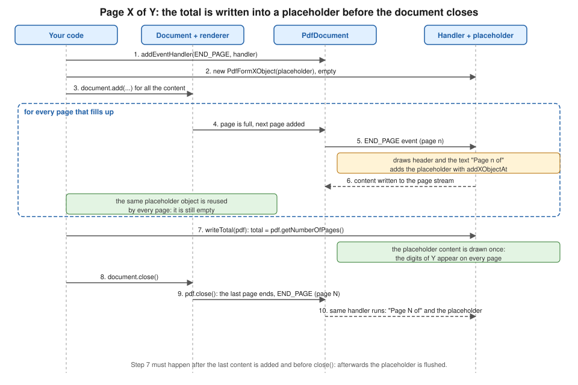

Page Events: Headers, Footers & Watermarks
|
This content was generated with the assistance of AI and should be verified against the official documentation before being relied on in production. |
Almost every business document repeats something on each page: a letterhead, the invoice number, "Page 2 of 5", a
"DRAFT" stamp behind the text. You cannot add these with ordinary layout elements, because the content of the page is
not known when you write the code: you do not know how many pages the invoice will take, nor where one page ends. iText
solves this with page events. The PdfDocument announces that a page is about to start, or has just ended, and an event
handler that you registered draws what it wants on that page. This page shows how to write such a handler in iText
9.8.0 (as of 2026-10-09, on Java 21), how to implement the classic "page X of Y" with a placeholder that is filled in
before the document closes, how to put backgrounds and watermarks under or over the content, and how to build a table of
contents with the cooperation of events and renderers. It continues the Bookshelf Billing invoice used by the other
iText pages of this section. The document, writer and layout objects used here are introduced in
Document Lifecycle, the fonts in
Fonts & Unicode, and the images in
Colours, Images & SVG. Every example below was compiled
and run against iText 9.8.0, and the resulting files were opened and their text extracted to check the header, the
footer numbers, the watermark and the table of contents.
What changed since PdfPageEventHelper and HeaderFooter
Books written for iText 1 and 2, among them the 2006 text iText in Action that was consulted for the order of
concepts of this page and is not reproduced, decorate pages in two ways. The simple one is the HeaderFooter class, set
on the Document with a phrase and a "numbered" flag. The flexible one is PdfPageEventHelper: you subclass it,
override onOpenDocument, onStartPage, onEndPage and onCloseDocument, and register it with
PdfWriter.setPageEvent. Neither exists in iText 7, 8 or 9 (finding O9 of this section’s source analysis, and for
HeaderFooter, the page-decoration part of finding O5). The current approach is:
-
There is no
HeaderFooter. A header or a footer is something you draw yourself, from an event handler, using the same canvas objects as the rest of the library. -
The helper class is replaced by
com.itextpdf.kernel.pdf.event.AbstractPdfDocumentEventHandler. You subclass it and implement a single method,onAcceptedEvent, and you register the handler on thePdfDocumentfor one or more event types withaddEventHandler. In iText 7 and 8 you implemented the interfacecom.itextpdf.kernel.events.IEventHandlerand the event class wasEvent. iText 9.0 removed that interface from the kernel module: it was renamed and moved toAbstractPdfDocumentEventHandler,EventbecameAbstractPdfDocumentEvent, andPdfDocumentEventmoved to thekernel.pdf.eventpackage. Code written for iText 7 or 8 therefore changes fromimplements IEventHandlertoextends AbstractPdfDocumentEventHandler, and the import of the event types changes with it. The official list of these changes is in the Breaking changes for iText 9 page of the knowledge base. Many tutorials and answers on the web still show the old form, and so do some pages of the iText knowledge base that were written for iText 7: where they differ from the code below, the code below is the one that was compiled against 9.8.0. -
There is no per-writer page event. Handlers are registered on the
PdfDocument, which is the object that knows about pages, so they work the same whether you build a document with the layoutDocument, with the low-level canvas, or in stamping mode. -
There is no
onOpenDocumentcallback, andonCloseDocumenthas no direct equivalent on a handler class: the nearest is theSTART_DOCUMENT_CLOSINGevent type listed below. This page still does the closing work (writing the total number of pages) explicitly in your code, just before the document is closed, which keeps the order visible.
The licence is the one of the rest of iText: the AGPLv3 or a commercial licence. All classes used on this page are in
the kernel and layout modules of iText Core, so no extra module is needed.
The event model
A PdfDocument dispatches events to the handlers registered for the event type. PdfDocumentEvent defines these types
(as string constants):
-
START_PAGE: a new page was created and is still empty. It is fired when you callpdf.addNewPage()and also when the layout engine starts a new page because the previous one is full. -
END_PAGE: a page is finished and is about to be flushed. It is fired when the layout moves on to the next page, and for the last page it is fired while the document closes. -
INSERT_PAGEandREMOVE_PAGE: a page was added at a given position, or was removed. These are useful when you manipulate an existing document (see the page on stamping in this section). -
START_DOCUMENT_CLOSINGandSTART_WRITER_CLOSING: the document, or its writer, is about to be closed.
A handler receives an AbstractPdfDocumentEvent. For the page events you cast it to PdfDocumentEvent, which gives
you getDocument() and getPage(). The page is where you draw: you create a PdfCanvas on it, or a layout Canvas
on top of that, and the page number comes from pdf.getPageNumber(page). A handler can be registered for several
types; the same handler instance receives them all, and you can tell them apart with event.getType(). To stop a
handler, call pdf.removeEventHandler(handler). Since 9.0 this takes the handler instead of a type and a handler.
The two events differ in a way that matters for what you draw. START_PAGE is fired before any content is placed on the
page, so anything you draw there goes into the content stream first and ends up behind the text and tables: it is the
right place for backgrounds and watermarks. END_PAGE is fired after the layout has finished the page, so you know
which page number it is and the content has been placed: it is the place for headers, footers and anything that must
go over the content. If you need to guarantee the stacking order whatever the event, use
page.newContentStreamBefore() (below all content) or page.newContentStreamAfter() (above all content) to obtain the
stream that you pass to the PdfCanvas; the examples do that.
One practical consequence: the layout engine does not know about your header. If the header takes space, you must
reserve it with the page margins of the Document, as the first example does with
document.setMargins(54, 36, 54, 36). The handler draws inside the margins, the layout fills the rest.
Headers and footers with page X of Y
"Page 2 of 5" cannot be written when page 2 is created, because the 5 is not known yet. The idea that survives from the
old days is a placeholder: you reserve an empty box where the total goes, and fill it once you know it. In iText 9 the
placeholder is a PdfFormXObject, a reusable chunk of drawing that you create once and show on every page with
PdfCanvas.addXObjectAt. Because every page refers to the same object, drawing into it once, later, makes the total
appear on all pages at the same time. The steps are shown in the figure.

The first example is a complete program. It registers a handler for END_PAGE, draws a header with a rule on the left
and a centred footer made of the text "Page n of " followed by the placeholder, and then fills the placeholder with the
number of pages. Add iText Core as a POM aggregator plus one Bouncy Castle adapter (the adapter is only needed for
encryption and signing, and is restated here so the coordinates are complete on this page); iText is licensed under the
AGPLv3 or under a commercial licence.
<dependency>
<groupId>com.itextpdf</groupId>
<artifactId>itext-core</artifactId>
<version>9.8.0</version>
<type>pom</type>
</dependency>
<dependency>
<groupId>com.itextpdf</groupId>
<artifactId>bouncy-castle-adapter</artifactId>
<version>9.8.0</version>
</dependency>package com.example.billing;
import com.itextpdf.io.font.constants.StandardFonts;
import com.itextpdf.kernel.font.PdfFont;
import com.itextpdf.kernel.font.PdfFontFactory;
import com.itextpdf.kernel.geom.PageSize;
import com.itextpdf.kernel.geom.Rectangle;
import com.itextpdf.kernel.pdf.PdfDocument;
import com.itextpdf.kernel.pdf.PdfPage;
import com.itextpdf.kernel.pdf.PdfWriter;
import com.itextpdf.kernel.pdf.canvas.PdfCanvas;
import com.itextpdf.kernel.pdf.event.AbstractPdfDocumentEvent;
import com.itextpdf.kernel.pdf.event.AbstractPdfDocumentEventHandler;
import com.itextpdf.kernel.pdf.event.PdfDocumentEvent;
import com.itextpdf.kernel.pdf.xobject.PdfFormXObject;
import com.itextpdf.layout.Canvas;
import com.itextpdf.layout.Document;
import com.itextpdf.layout.element.Paragraph;
import com.itextpdf.layout.properties.TextAlignment;
import java.io.IOException;
public class HeaderFooterExample {
/** Draws a header and a "Page n of m" footer on every page. */
static class HeaderFooterHandler extends AbstractPdfDocumentEventHandler {
private static final float SIDE = 30; // width of the placeholder for the total
private static final float FONT_SIZE = 9;
private final String header;
private final PdfFont font;
private final PdfFormXObject placeholder;
HeaderFooterHandler(String header, PdfFont font) {
this.header = header;
this.font = font;
this.placeholder = new PdfFormXObject(new Rectangle(0, 0, SIDE, FONT_SIZE * 1.5f));
}
@Override
protected void onAcceptedEvent(AbstractPdfDocumentEvent event) {
PdfDocumentEvent docEvent = (PdfDocumentEvent) event;
PdfDocument pdf = docEvent.getDocument();
PdfPage page = docEvent.getPage();
int pageNumber = pdf.getPageNumber(page);
Rectangle box = page.getPageSize();
PdfCanvas canvas = new PdfCanvas(page.newContentStreamAfter(), page.getResources(), pdf);
// Header: invoice title on the left, a rule under it
canvas.beginText().setFontAndSize(font, FONT_SIZE)
.moveText(box.getLeft() + 36, box.getTop() - 24)
.showText(header).endText();
canvas.moveTo(box.getLeft() + 36, box.getTop() - 30)
.lineTo(box.getRight() - 36, box.getTop() - 30).stroke();
// Footer: "Page n of " followed by the placeholder, centred as a whole
String prefix = "Page " + pageNumber + " of ";
float prefixWidth = font.getWidth(prefix, FONT_SIZE);
float x = (box.getWidth() - prefixWidth - font.getWidth("00", FONT_SIZE)) / 2;
canvas.beginText().setFontAndSize(font, FONT_SIZE)
.moveText(x, box.getBottom() + 24).showText(prefix).endText();
canvas.addXObjectAt(placeholder, x + prefixWidth, box.getBottom() + 24 - 2.5f);
canvas.release();
}
/** Call once, after all content was added and before the document is closed. */
void writeTotal(PdfDocument pdf) {
PdfCanvas canvas = new PdfCanvas(placeholder, pdf);
try (Canvas layoutCanvas = new Canvas(canvas, new Rectangle(0, 0, SIDE, FONT_SIZE * 1.5f))) {
layoutCanvas.add(new Paragraph(String.valueOf(pdf.getNumberOfPages()))
.setFont(font).setFontSize(FONT_SIZE).setMargin(0)
.setTextAlignment(TextAlignment.LEFT));
}
}
}
public static void main(String[] args) throws IOException {
try (PdfDocument pdf = new PdfDocument(new PdfWriter("header-footer.pdf"))) {
PdfFont font = PdfFontFactory.createFont(StandardFonts.HELVETICA);
HeaderFooterHandler handler = new HeaderFooterHandler("Bookshelf Billing - Invoice 2026-0001", font);
pdf.addEventHandler(PdfDocumentEvent.END_PAGE, handler);
try (Document document = new Document(pdf, PageSize.A4)) {
document.setMargins(54, 36, 54, 36);
for (int i = 1; i <= 120; i++) {
document.add(new Paragraph("Line %d of the invoice: Book number %d".formatted(i, i)).setFont(font));
}
// All content is laid out; the pages exist, so the total is known. Fill the placeholder
// before the document is closed at the end of this block.
handler.writeTotal(pdf);
}
}
}
}Points worth noting in this example:
-
The handler class extends
AbstractPdfDocumentEventHandlerand is registered withpdf.addEventHandler(PdfDocumentEvent.END_PAGE, handler). Registering with the type is what filters the events: the handler is only called for the types it was registered for. -
The placeholder is created with the final size of the digits, here 30 points wide, because a form XObject has a fixed bounding box: anything drawn outside is clipped. Five digits at 9 points fit comfortably in 30 points. If the total can be larger, make the box wider and align the text to the left, as the example does with
TextAlignment.LEFT. -
The width of the whole footer is calculated with
font.getWidth(text, size), so the footer is centred as a whole even though the "of Y" part is added later. The reserved width is that of two digits ("00"); a document of 100 pages or more would be off centre by a few points, which is why a right-aligned or left-aligned footer is more common for this layout. -
writeTotalopens aPdfCanvason the form XObject itself, wraps it in a layoutCanvasand adds aParagraph. This is the same mechanism as drawing fixed areas on a page. Try-with-resources closes theCanvas, which is what flushes the layout output into the XObject. -
writeTotalis called after the lastdocument.add, as the last statement of thetryblock that opens theDocument, so it runs before try-with-resources closes the document. At that point the layout has placed all the content, sopdf.getNumberOfPages()is final. The last page has not been "ended" yet: itsEND_PAGEruns while the document closes and adds the placeholder to the last page, so the "5" shows up there too. After the document is closed the placeholder is flushed and cannot be written to any more. -
page.newContentStreamAfter()makes the header and footer a separate content stream that is painted after the page content, so the footer is never covered by a table that reaches the bottom margin. -
The handler holds state (the font and the placeholder), so it is a normal class; for the data that you feed it (header text, logo, locale), prefer an immutable
recordthat you pass to the constructor.
If the header has to change from section to section (the running head of a chapter, the customer name on a multi-customer
batch), keep the current value in a field of the handler that your code updates, for example handler.setSection("Taxes")
before adding the section, and read it in onAcceptedEvent. Remember that END_PAGE runs after the layout of the page,
so a header that depends on the content of the page must be recorded while the content is laid out, for example from a
custom renderer as the table of contents example does. A header that depends on the document, such as the invoice
number, is simply a constructor argument.
Official documentation: the Page events for headers and footers and Header and footer examples pages of the knowledge base describe the same technique, and the API reference of AbstractPdfDocumentEventHandler and PdfFormXObject lists their methods.
Page numbers when pages move
The number printed by END_PAGE is the position of the page at the time of the event. If you later insert, remove or
move pages (for example, to bring a table of contents to the front, as the last example does), the numbers that were
already drawn do not change. Either finish the page order before the events run, or draw the page numbers in a second
pass, in stamping mode (see the page on manipulating existing PDFs in this section), where the final order is known. A
related caution for PDF/A documents: the placeholder technique draws text with the same font as the rest of the file,
so the font must be embedded as the standard requires; the PDF/A page of this section covers this.
Backgrounds and watermarks
A watermark is the same mechanism with a different event and different drawing operators. The second example registers two
handlers. The first runs on START_PAGE, fills the page with a pale colour, and draws the word "DRAFT" at 45 degrees
in a large grey font with 15 % opacity; both go to a content stream placed before the page content, so the text of the
invoice stays fully readable above them. The second runs on END_PAGE and puts a small semi-transparent logo in the
bottom right corner, above the content. The logo is generated in memory so that the example needs no file; in your
service you would load it from the classpath with ImageDataFactory.create(path).
package com.example.billing;
import com.itextpdf.io.font.constants.StandardFonts;
import com.itextpdf.io.image.ImageData;
import com.itextpdf.io.image.ImageDataFactory;
import com.itextpdf.kernel.colors.ColorConstants;
import com.itextpdf.kernel.colors.DeviceRgb;
import com.itextpdf.kernel.font.PdfFont;
import com.itextpdf.kernel.font.PdfFontFactory;
import com.itextpdf.kernel.geom.PageSize;
import com.itextpdf.kernel.geom.Rectangle;
import com.itextpdf.kernel.pdf.PdfDocument;
import com.itextpdf.kernel.pdf.PdfPage;
import com.itextpdf.kernel.pdf.PdfWriter;
import com.itextpdf.kernel.pdf.canvas.PdfCanvas;
import com.itextpdf.kernel.pdf.extgstate.PdfExtGState;
import com.itextpdf.kernel.pdf.event.AbstractPdfDocumentEvent;
import com.itextpdf.kernel.pdf.event.AbstractPdfDocumentEventHandler;
import com.itextpdf.kernel.pdf.event.PdfDocumentEvent;
import com.itextpdf.layout.Canvas;
import com.itextpdf.layout.Document;
import com.itextpdf.layout.element.Paragraph;
import com.itextpdf.layout.properties.HorizontalAlignment;
import com.itextpdf.layout.properties.TextAlignment;
import com.itextpdf.layout.properties.VerticalAlignment;
import javax.imageio.ImageIO;
import java.awt.Color;
import java.awt.Graphics2D;
import java.awt.image.BufferedImage;
import java.io.ByteArrayOutputStream;
import java.io.IOException;
public class WatermarkExample {
/** START_PAGE: a pale background and a diagonal text watermark, both below the page content. */
static class BackgroundAndWatermarkHandler extends AbstractPdfDocumentEventHandler {
private final String text;
private final PdfFont font;
private final PdfExtGState half = new PdfExtGState().setFillOpacity(0.15f);
BackgroundAndWatermarkHandler(String text, PdfFont font) {
this.text = text;
this.font = font;
}
@Override
protected void onAcceptedEvent(AbstractPdfDocumentEvent event) {
PdfDocumentEvent docEvent = (PdfDocumentEvent) event;
PdfDocument pdf = docEvent.getDocument();
PdfPage page = docEvent.getPage();
Rectangle box = page.getPageSize();
// newContentStreamBefore() puts the drawing under whatever is added later
PdfCanvas under = new PdfCanvas(page.newContentStreamBefore(), page.getResources(), pdf);
under.saveState()
.setFillColor(new DeviceRgb(250, 247, 238))
.rectangle(box).fill()
.restoreState();
under.saveState().setExtGState(half);
try (Canvas canvas = new Canvas(under, box)) {
canvas.showTextAligned(new Paragraph(text).setFont(font).setFontSize(72)
.setFontColor(ColorConstants.GRAY),
box.getWidth() / 2, box.getHeight() / 2, pdf.getPageNumber(page),
TextAlignment.CENTER, VerticalAlignment.MIDDLE, (float) Math.toRadians(45));
}
under.restoreState();
under.release();
}
}
/** END_PAGE: a small logo watermark above the content, in the bottom right corner. */
static class LogoHandler extends AbstractPdfDocumentEventHandler {
private final ImageData logo;
LogoHandler(ImageData logo) {
this.logo = logo;
}
@Override
protected void onAcceptedEvent(AbstractPdfDocumentEvent event) {
PdfDocumentEvent docEvent = (PdfDocumentEvent) event;
PdfPage page = docEvent.getPage();
Rectangle box = page.getPageSize();
PdfCanvas over = new PdfCanvas(page.newContentStreamAfter(), page.getResources(), docEvent.getDocument());
over.saveState().setExtGState(new PdfExtGState().setFillOpacity(0.5f));
over.addImageFittedIntoRectangle(logo, new Rectangle(box.getRight() - 90, box.getBottom() + 12, 54, 54), false);
over.restoreState();
over.release();
}
}
static byte[] generateLogoPng() throws IOException {
BufferedImage image = new BufferedImage(120, 120, BufferedImage.TYPE_INT_ARGB);
Graphics2D g = image.createGraphics();
g.setColor(new Color(31, 95, 166));
g.fillOval(4, 4, 112, 112);
g.setColor(Color.WHITE);
g.fillRect(36, 40, 48, 40);
g.dispose();
ByteArrayOutputStream out = new ByteArrayOutputStream();
ImageIO.write(image, "png", out);
return out.toByteArray();
}
public static void main(String[] args) throws IOException {
try (PdfDocument pdf = new PdfDocument(new PdfWriter("watermark.pdf"));
Document document = new Document(pdf, PageSize.A4)) {
PdfFont bold = PdfFontFactory.createFont(StandardFonts.HELVETICA_BOLD);
pdf.addEventHandler(PdfDocumentEvent.START_PAGE, new BackgroundAndWatermarkHandler("DRAFT", bold));
pdf.addEventHandler(PdfDocumentEvent.END_PAGE, new LogoHandler(ImageDataFactory.create(generateLogoPng())));
for (int i = 1; i <= 80; i++) {
document.add(new Paragraph("Invoice line " + i).setHorizontalAlignment(HorizontalAlignment.LEFT));
}
}
}
}Notes on the example:
-
Transparency is an extended graphics state,
PdfExtGState:setFillOpacityapplies to fills, text and images, andsetStrokeOpacityto strokes. It is set betweensaveState()andrestoreState()so that it does not leak to the rest of the page. A newPdfExtGStateper page is wasteful, so the first handler keeps one in a field and reuses it. -
The text is placed with
Canvas.showTextAligned, which accepts the page number, the horizontal and vertical alignment and a rotation angle in radians. The point(width / 2, height / 2)is the centre of the page, and the coordinate system has its origin at the bottom left corner of the page (the page on low-level canvas in this section explains the coordinate system and the transformation matrix). -
addImageFittedIntoRectanglescales the image to fill the rectangle exactly; it does not keep the aspect ratio, so an image whose proportions differ from the rectangle’s is stretched (the logo here is square, like its 54 by 54 rectangle). The last parameter says whether the image is added inline in the content stream (true) or as an XObject that is stored once and reused (false, as here, the right choice for a logo repeated on every page). -
A background drawn as a filled rectangle covers the whole page and its cost is a single operator. A background image works the same: call
addImageFittedIntoRectanglewith the page size, using an image with the page’s proportions. For letterhead on the first page only, checkpdf.getPageNumber(page) == 1in the handler. -
A tiling or repeated watermark is a loop around
showTextAligned, or better, a tiling pattern (see the pattern colours in Colours, Images & SVG). -
The handlers run for every page, including the pages that a table adds when it spans several pages. That is the reason to prefer events over adding a watermark element to the document: an element is added once, in one place in the flow.
A word of caution about the meaning of a watermark. It is drawn content, and anybody with a PDF editor can delete it. If
the "DRAFT" stamp must not be removable, or if the document must not be changed at all, sign the file (see the
digital signature pages of this section) or encrypt it with permissions; the watermark alone is a visual hint, not a
control. In the same way, a watermark added in stamping mode to an existing PDF (for instance to stamp a received PDF
with the date of reception) uses the same canvas code with a handler on the stamped PdfDocument, or with a plain loop
over pdf.getNumberOfPages() that creates a PdfCanvas on each page.
Official documentation: the Watermark examples and Adding backgrounds using page events pages of the knowledge base, and the API reference of PdfExtGState and Canvas.
A table of contents
A table of contents needs a fact that only the layout engine knows: on which page each heading ended up. Events alone
cannot tell, because END_PAGE carries the page but not the elements that were placed on it. The usual solution is a
small team of two: the renderer of each heading records its page when it is laid out, and the document then writes the
table of contents once everything has been placed. The TocExample class does this with the following steps:
-
Each heading is a
Paragraphwith a destination name (setDestination) and a custom renderer (a subclass ofParagraphRenderer). Renderers are explained in the page on renderers and custom layout of this section; here the only thing you need to know is thatlayout()is called when the element is placed and that the area it is placed in knows its page number. Because a paragraph can be laid out several times (for example when it does not fit and is tried again on the next page), the renderer removes its previous entry before adding the new one, and implementsgetNextRenderer()so that the copy iText makes when a paragraph is split still records itself. -
After the last chapter the code adds a page break and the table of contents, one
Paragraphper entry with a right-aligned, dotted tab stop (TabStop,TabAlignment.RIGHT,DottedLine) between title and page number, and an actionPdfAction.createGoTo(destination)that turns the whole line into a link. -
The contents page, created last, is moved to the front with
pdf.movePage. Moving shifts every following page by the number of contents pages, so the number shown ispage + tocPages. If the contents can run to several pages, lay it out once to learn how many pages it needs (for example into a throwawayPdfDocumentin memory), or reserve a fixed number of pages for it.
package com.example.billing;
import com.itextpdf.io.font.constants.StandardFonts;
import com.itextpdf.kernel.font.PdfFont;
import com.itextpdf.kernel.font.PdfFontFactory;
import com.itextpdf.kernel.geom.PageSize;
import com.itextpdf.kernel.pdf.PdfDocument;
import com.itextpdf.kernel.pdf.PdfWriter;
import com.itextpdf.kernel.pdf.action.PdfAction;
import com.itextpdf.kernel.pdf.canvas.draw.DottedLine;
import com.itextpdf.layout.Document;
import com.itextpdf.layout.element.AreaBreak;
import com.itextpdf.layout.element.Paragraph;
import com.itextpdf.layout.element.Tab;
import com.itextpdf.layout.element.TabStop;
import com.itextpdf.layout.element.Text;
import com.itextpdf.layout.layout.LayoutContext;
import com.itextpdf.layout.layout.LayoutResult;
import com.itextpdf.layout.properties.AreaBreakType;
import com.itextpdf.layout.properties.TabAlignment;
import com.itextpdf.layout.renderer.IRenderer;
import com.itextpdf.layout.renderer.ParagraphRenderer;
import java.io.IOException;
import java.util.ArrayList;
import java.util.List;
public class TocExample {
record TocEntry(String title, String destination, int page) { }
/** Records on which page each heading really landed, once layout has placed it. */
static class HeadingRenderer extends ParagraphRenderer {
private final String title;
private final String destination;
private final List<TocEntry> entries;
HeadingRenderer(Paragraph modelElement, String title, String destination, List<TocEntry> entries) {
super(modelElement);
this.title = title;
this.destination = destination;
this.entries = entries;
}
@Override
public LayoutResult layout(LayoutContext layoutContext) {
LayoutResult result = super.layout(layoutContext);
if (result.getStatus() != LayoutResult.NOTHING) {
entries.removeIf(e -> e.destination().equals(destination));
entries.add(new TocEntry(title, destination, layoutContext.getArea().getPageNumber()));
}
return result;
}
@Override
public IRenderer getNextRenderer() {
return new HeadingRenderer((Paragraph) modelElement, title, destination, entries);
}
}
static Paragraph heading(String title, String destination, PdfFont bold, List<TocEntry> entries) {
Paragraph p = new Paragraph(title).setFont(bold).setFontSize(16).setDestination(destination);
p.setNextRenderer(new HeadingRenderer(p, title, destination, entries));
return p;
}
public static void main(String[] args) throws IOException {
List<TocEntry> entries = new ArrayList<>();
try (PdfDocument pdf = new PdfDocument(new PdfWriter("toc.pdf"));
Document document = new Document(pdf, PageSize.A4)) {
PdfFont regular = PdfFontFactory.createFont(StandardFonts.HELVETICA);
PdfFont bold = PdfFontFactory.createFont(StandardFonts.HELVETICA_BOLD);
// Content first; the table of contents is generated afterwards and moved to the front
String[] chapters = {"Customers", "Invoice lines", "Taxes", "Payments"};
for (int c = 0; c < chapters.length; c++) {
if (c > 0) {
document.add(new AreaBreak(AreaBreakType.NEXT_PAGE));
}
document.add(heading(chapters[c], "chapter-" + c, bold, entries));
for (int i = 1; i <= 8; i++) {
document.add(new Paragraph("Text of chapter " + chapters[c] + ", paragraph " + i).setFont(regular));
}
}
int tocStart = pdf.getNumberOfPages() + 1;
document.add(new AreaBreak(AreaBreakType.NEXT_PAGE));
document.add(new Paragraph("Table of contents").setFont(bold).setFontSize(18));
int tocPages = 1;
for (TocEntry entry : entries) {
// +tocPages: the contents page shifts every page number that follows it
int shown = entry.page() + tocPages;
Paragraph line = new Paragraph()
.addTabStops(new TabStop(520, TabAlignment.RIGHT, new DottedLine()))
.add(new Text(entry.title()).setFont(regular))
.add(new Tab())
.add(new Text(String.valueOf(shown)).setFont(regular))
.setAction(PdfAction.createGoTo(entry.destination()));
document.add(line);
}
for (int i = 0; i < tocPages; i++) {
pdf.movePage(tocStart + i, 1 + i);
}
}
}
}The same data can feed the bookmarks panel of a PDF viewer: add PdfOutline objects from pdf.getOutlines(false) with
the same destinations (the page on navigation and actions in this section covers outlines in depth). An event handler
still has a role in a document like this: the header and footer handlers above run for the contents page too, and a
START_PAGE handler is where you would stamp the "Contents" running head. What it must not do is write page numbers
on pages that are later moved, as discussed above.
Official documentation: the Creating table of contents using events page of the knowledge base shows the same idea with event handlers and renderers, and Using renderers and event handlers explains the two mechanisms together. The API reference of ParagraphRenderer lists what can be overridden.
Java 21 idioms for event handlers (O28)
The old tutorials were written for Java 1.3 to 5: anonymous inner classes, no generics, StringBuffer and manual
close() calls in finally blocks. The examples on this page use what a Java 21 service would use:
-
try-with-resources forPdfDocumentand the layoutDocument(and for the layoutCanvasthat fills the placeholder), so the file is closed, and the placeholder flushed, even when an exception occurs. -
recordtypes for the data that a handler needs (TocEntry), because the entries are immutable values that are collected during layout and read afterwards. -
String.formattedinstead ofString.formatand concatenation. -
Small static nested classes for the handlers, with their configuration in final fields set from the constructor, so that a handler can be reused for several documents only if it is stateless. A handler that holds a placeholder (as the footer handler does) belongs to one document and must not be shared between documents or between threads: create it per request, as you create the
PdfDocument.
Thread safety follows from that last point. iText documents are not thread safe, and the handlers belong to a document, so
in a Spring Boot service each request creates its own PdfDocument and handlers. Nothing is shared except immutable
configuration and, if you want to save time, the parsed image data or font programs described in the pages on fonts and
on testing and performance.
Common mistakes
-
Drawing the page number in
START_PAGE: the page already has a number, but it is not final if you insert pages later, and anything drawn there goes behind the content. UseEND_PAGEfor numbers. -
Forgetting to reserve space with the document margins, so the header overlaps the first line of the text.
-
Calling
writeTotalafterdocument.close(): the placeholder is already flushed and the write fails or has no effect. Call it before. -
Using a new
PdfFormXObjectper page for the total: each one would need to be filled. One placeholder, shared by all pages, is filled once. -
Looking for
PdfPageEventHelper,HeaderFooterorsetPageEventon the writer: they were removed in iText 7, and theIEventHandlerinterface of iText 7 and 8 was removed in 9.0. -
Mixing the coordinate system of the layout (which flows from the top) with the one of the canvas (origin at the bottom left): header positions are
page.getPageSize().getTop() - offset.
What comes next
The renderer technique used for the table of contents is the general mechanism of the layout engine, described in the renderers and custom layout page of this section. The canvas operators and the graphics state used by the watermark are in the low-level canvas page, and the table borders that used to be drawn with table and cell events are drawn with renderers too, as described in Tables. The structure of the three objects that every example here depends on is in iText Architecture & Modules, and the full list of page and reading pages is on the section landing page.